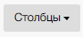
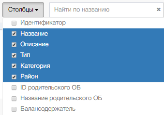

Изменение набора столбцов реестра
Набор столбцов определяется с помощью управляющего элемента «Столбцы» на панели инструментов

Для отображения перечня столбцов нужно кликнуть по кнопке «Столбцы». Система откроет окно выбора столбцов 
Полный перечень столбцов реестра
| № п.п. | Наименование столбца | Предназначение |
|---|---|---|
| 1 | 3 | 4 |
| 1. | Портальный идентификатор. | Портальный уникальный номер объекта. |
| 2. | Идентификатор. | Идентификатор. |
| 3. | Название. | Наименование объекта. |
| 4. | Описание. | Описание ОБ. |
| 5. | Тип. | Тип ОБ по классификатору. |
| 6. | Категория. | Категория ОБ по классификатору. |
| 7. | Район. | Район местонахождения ОБ. |
| 8. | Балансодержатель. | Балансодержатель ОБ. |
| 9. | Ответственный за ведение данных. | Имя пользователя на Портале, ответственного за ведение данных. |
| 10. | Контракт. | Номера контрактов, заключенных на ОБ. |
| 11. | Обслуж. орг-я. | Наименование организации, обслуживающей ОБ. |
| 12. | ИОГВ\МО. | ИОГВ\МО. |
| 13. | Создан. | ФИО создателя ОБ. |
| 14. | Изменен. | ФИО пользователя, внесшего изменения в характеристики ОБ. |
| 15. | Дата создания. | Дата создания ОБ. |
| 16. | Дата изменения. | Дата изменения ОБ. |
| 17. | Адрес. | Адрес ОБ. |
| 18. | Площадь. | Площадь ОБ. |
| 19. | Протяженность. | Протяженность ОБ. |
| 20. | Инвентарный номер. | Инвентарный номер ОБ. |
| 21. | Дата инвентаризации. | Дата инвентаризации ОБ. |
| 22. | Наличие данных в ПК Имущество. | Информации о наличии данных об ОБв система ПК Имущество. |
| 23. | Инвентарный номер в ПК Имущество. | Инвентарный номер ОБ в системе ПК Имущество. |
| 24. | Наличие охранного статуса. | Наличие охранного статуса ОБ. |
| 25. | Свойство связи геометрии дорог с семантикой. | Свойство связи геометрии дорогс семантикой. |
| 26. | Номер базисного квартала. | Номер базисного квартала. |
| 27. | Кадастровый номер. | Кадастровый номер ОБ. |
| 28. | Уникальный идентификатор геометрии. | Уникальный идентификатор геометрии ОБ. |
| 29. | Верхний родительский объект. | Верхний родительский объект. |
| 30. | Номер по НПА. | Номер ОБ по НПА. |
| 31. | Тип геометрии. | Тип геометрии ОБ. |
| 32. | Старый номер. | Старый номер ОБ. |
| 33. | Площадь по карте. | Площадь ОБ по карте. |
| 34. | Протяженность по карте. | Протяженность ОБ по карте. |
| 35. | Источник данных. | Источник данных. |
| 36. | Наличие геометрии. | Наличие геометрии ОБ. |
Необходимо выбрать нужные столбцы из представленного перечня, Система добавит выбранные столбцы в таблицу.